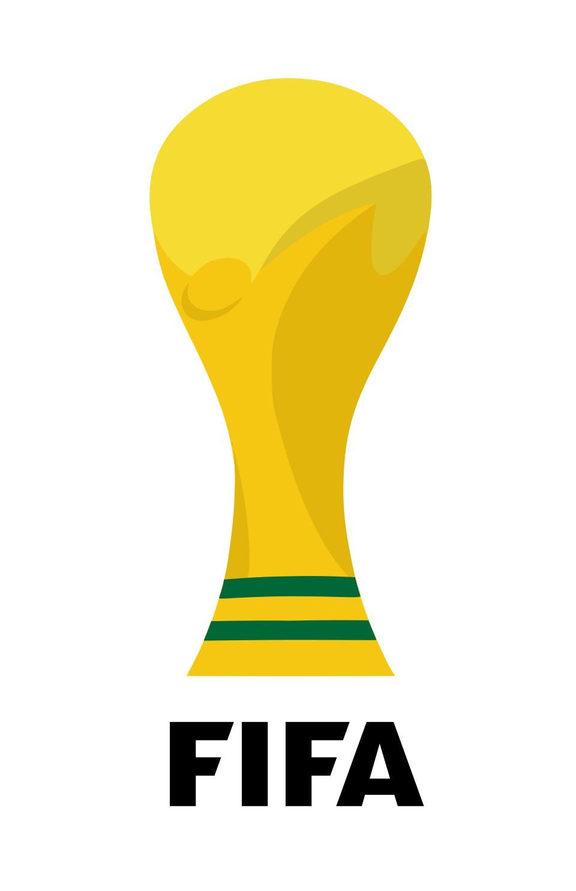
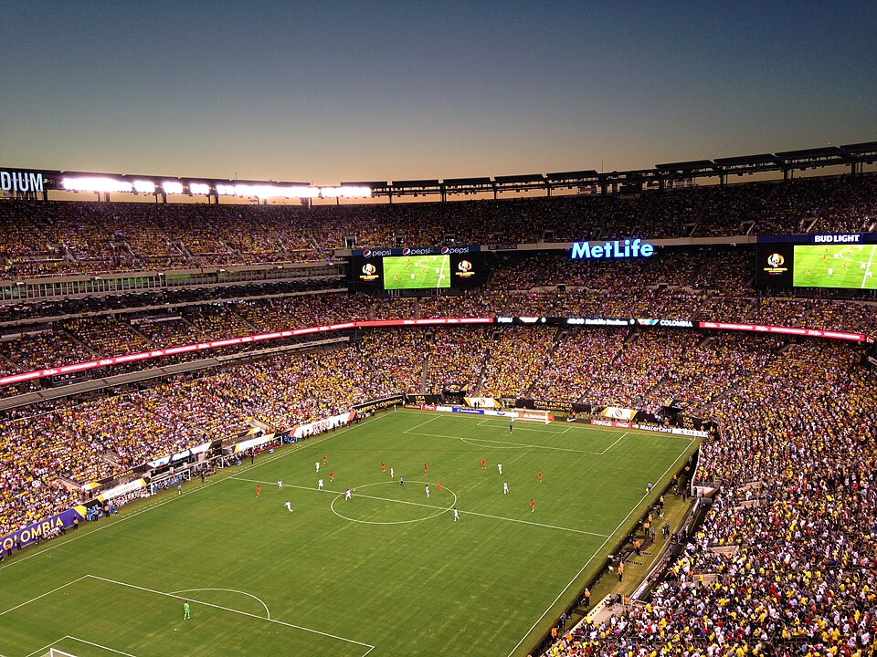
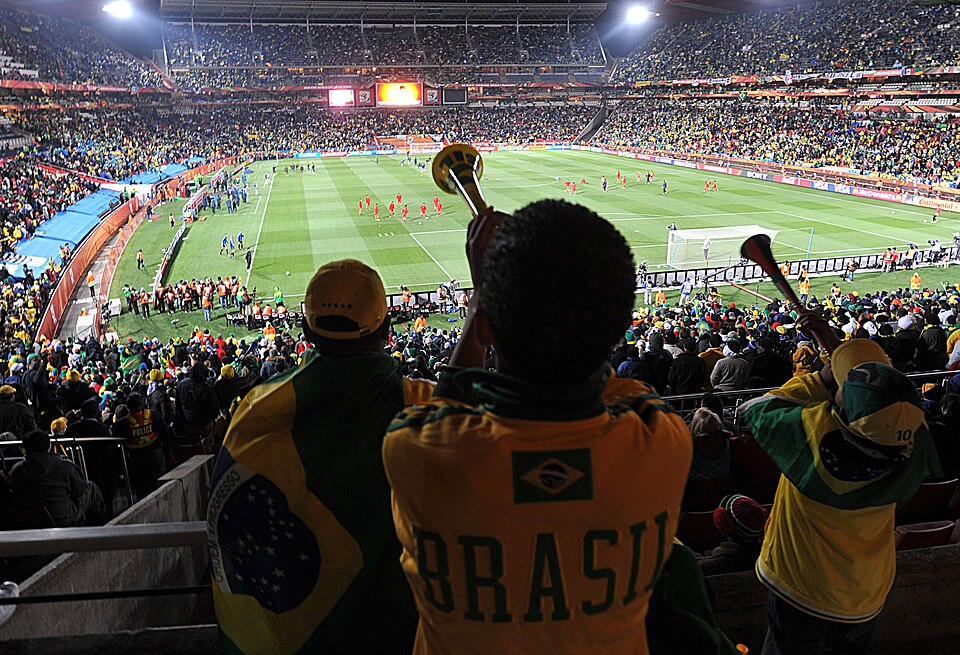
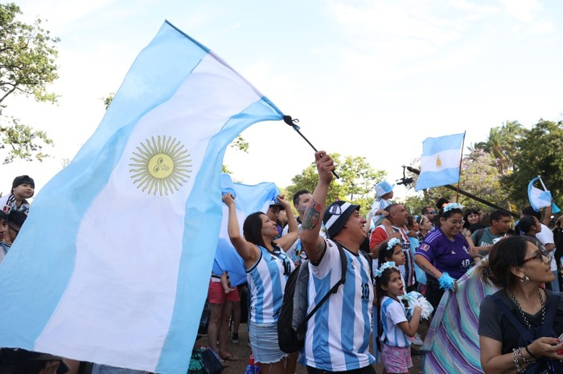
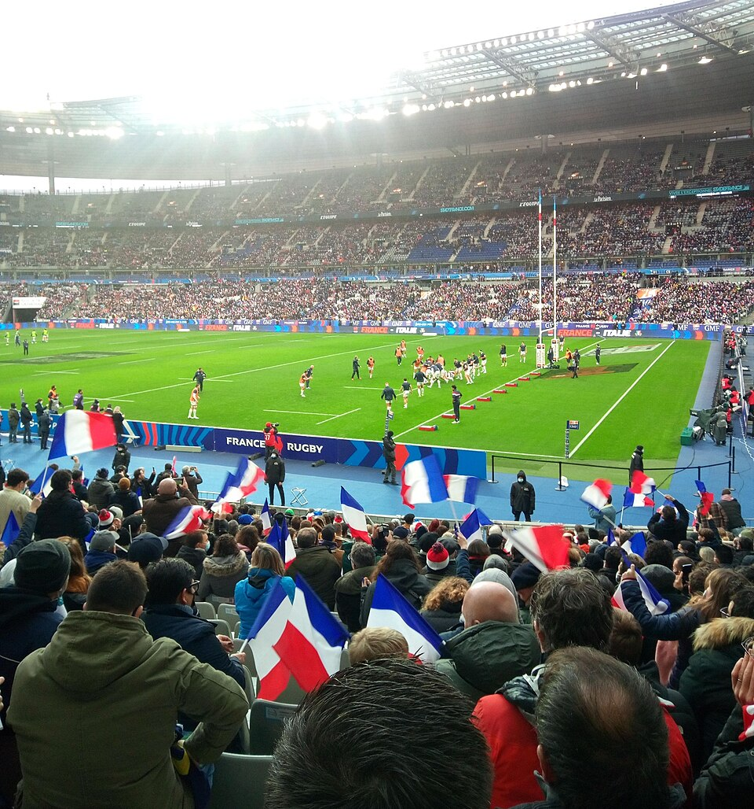
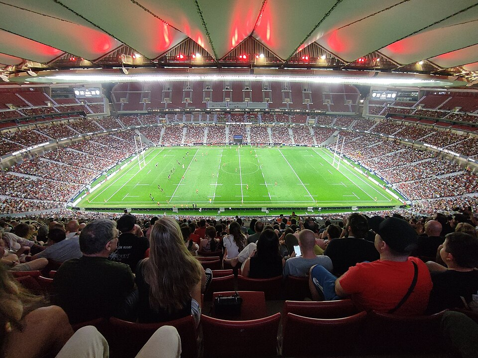

COPA DO MUNDO 2026 |
 |
|||||
| HOME | GRUPOS | SELEÇÃO BRASILEIRA | TABELA DE JOGOS | VÍDEO | ||||||
|
 |
||||||
Curiosidades
|
Copa do Mundo FIFA 2026A Copa do Mundo FIFA 2026 será um marco na história do futebol. Pela primeira vez, o torneio será realizado em três países: Estados Unidos, Canadá e México. Além disso, a competição contará com 48 seleções participantes, tornando-se a maior edição já organizada pela FIFA. O evento reunirá milhões de torcedores e os melhores jogadores do mundo em uma disputa emocionante pelo título de campeão mundial. As partidas serão realizadas em modernos estádios e prometem grandes momentos para os fãs do esporte. A Seleção Brasileira chega à competição com a expectativa de conquistar o hexacampeonato. Conhecida por sua tradição e talento, a equipe brasileira é sempre uma das mais aguardadas e favoritas em qualquer edição da Copa do Mundo. Mais do que uma competição esportiva, a Copa do Mundo representa a união entre povos e culturas diferentes, celebrando o futebol como uma paixão mundial. Por isso, o torneio é considerado um dos maiores eventos esportivos do planeta. |
Destaques
|
||||
Galeria de Torcidas |
||||||
|
 Torcida brasileira |
 Torcida argentina |
 Torcida francesa |
 Torcida espanhola |
|||
| Parceiros | Eventos | Galeria | Links Úteis | ||||||
| Site desenvolvido para fins educacionais - Copa do Mundo 2026 | ||||||